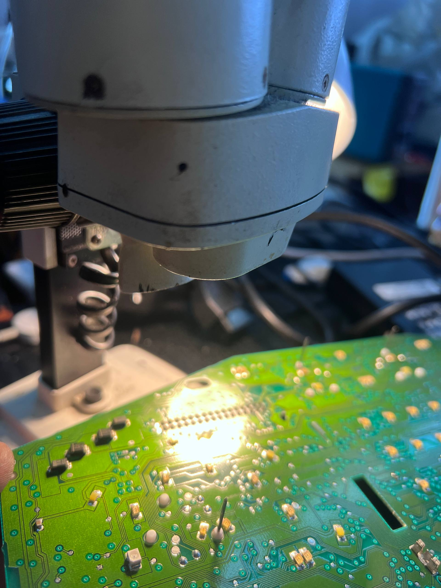
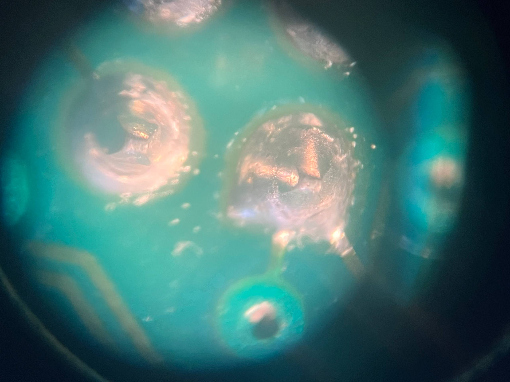
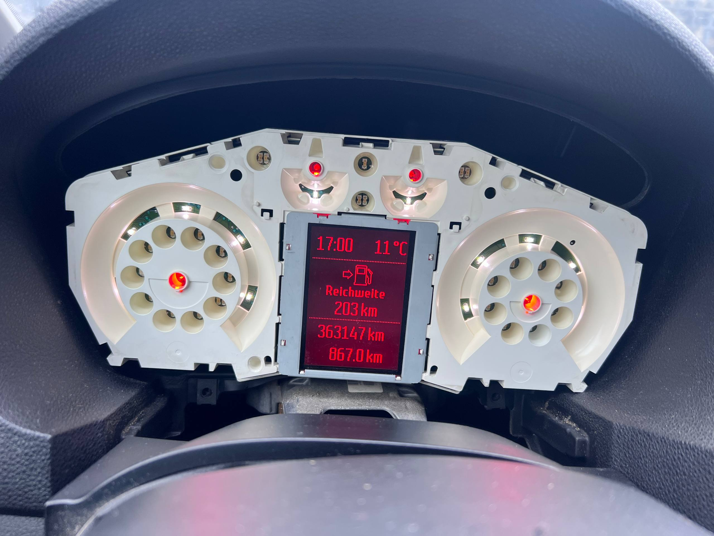

Gdy w Fordzie C-Max Mk1 skaczą wskazówki licznika i wyskakują błędy sterowników, przyczyną bardzo często są zimne luty na złączu licznika – tak było i w tym aucie. Przelutowaliśmy samo złącze na płytce licznika i objawy ustąpiły, procesor nie wymagał naprawy. To typowa usterka liczników Forda z czerwonym wyświetlaczem: tydzień wcześniej mieliśmy w elektroden w Gdańsku Focusa z tym samym problemem.



Licznik w Fordzie C-Max Mk1 dawał dwa typowe objawy: drgające i skaczące wskazówki oraz błędy zapisane w sterownikach. Zestaw wskaźników (licznik) to osobny sterownik z własną płytką elektroniki, który pokazuje prędkość, obroty, poziom paliwa i komunikaty z innych modułów.
W takich autach usterka zwykle pojawia się raz tak, raz nie – zależnie od temperatury, wilgotności i drgań w czasie jazdy. Dlatego kierowcy często długo z nią jeżdżą, zanim licznik trafi do naprawy.
Zimne luty to pęknięcia w cynie, którą piny złącza są przylutowane do płytki licznika. Na zdjęciach spod mikroskopu widać je jako szczeliny wokół pinów – cyna nie trzyma już pinu na całym obwodzie.
Z czasem nagrzewanie, stygnięcie i drgania sprawiają, że takie połączenie raz przewodzi, a raz nie. Licznik na ułamki sekundy traci zasilanie albo sygnał, więc wskazówki skaczą, a sterowniki zapisują błędy. W wielu Fordach z tego okresu licznik pośredniczy też w wymianie danych między magistralami CAN, dlatego jedna usterka na jego płytce potrafi dać błędy w kilku innych modułach.
Na płytce licznika Forda C-Max pod mikroskopem widać popękane luty na pinach złącza – to tędy wchodzą do licznika zasilanie, masa i linie komunikacyjne. Gołym okiem takie pęknięcia łatwo przeoczyć, w powiększeniu są wyraźne.
Procesor licznika w tym C-Maxie był w dobrym stanie – usterka dotyczyła wyłącznie złącza.
Zimne luty to typowa usterka liczników Forda z czerwonym wyświetlaczem. Najczęściej spotykamy ją w tych modelach:
To wciąż dość częsta usterka, choć takich aut przyjeżdża do nas mniej niż kiedyś – mają już swoje lata. Tydzień przed tym C-Maxem naprawialiśmy Focusa z identycznym problemem.
Naprawa licznika w Fordzie C-Max polegała wyłącznie na przelutowaniu złącza na płytce – nowa cyna łączy piny z polami lutowniczymi na całym obwodzie. Nic więcej nie było potrzebne: wskazówki przestały skakać, a błędy ustąpiły. Tak samo było w Focusie, który trafił do nas tydzień wcześniej – tam również wystarczyło przelutowanie samego złącza.
Nie zawsze kończy się na złączu. Wcześniej mieliśmy Kugi, w których trzeba było przelutować także procesor licznika. Licznika nie trzeba jednak wymieniać na nowy ani na używany, który może mieć tę samą wadę. Taką pracą zajmuje się elektronik samochodowy naprawiający sterowniki, a jeśli objawy nie są jednoznaczne, zaczynamy od diagnostyki komputerowej.
Jeżeli w Twoim Fordzie wariuje licznik, przyjedź do elektroden – Zawodzie 35 w Gdańsku, od poniedziałku do soboty w godz. 8:00–20:00.